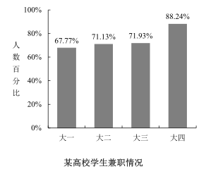

2013 年全国硕士研究生招生考试英语（二）
Section I Use of English
Directions:
Read the following text. Choose the best word(s) for each numbered blank and mark A, B, C or D on the ANSWER SHEET. (10 points)
Given the advantages of electronic money, you might think that we would move quickly to the cashless society in which all payments are made electronically. 1 , a true cashless society is probably not around the corner. Indeed, predictions have been 2 for two decades but have not yet come to fruition. For example, Business Week predicted in 1975 that electronic means of payment would soon “revolutionize the very 3 of money itself,” only to 4 itself several years later. Why has the movement to a cashless society been so 5 in coming?
Although electronic means of payment may be more efficient than a payments system based on paper, several factors work 6 the disappearance of the paper system. First, it is very 7 to set up the computer, card reader, and telecommunications networks necessary to make electronic money the 8 form of payment. Second, paper checks have the advantage that they 9 receipts, something that many consumers are unwilling to 10 . Third, the use of paper checks gives consumers several days of “float” — it takes several days 11 a check is cashed and funds are 12 from the issuer’s account, which means that the writer of the check can earn interest on the funds in the meantime. 13 electronic payments are immediate, they eliminate the float for the consumer.
Fourth, electronic means of payment may 14 security and privacy concerns. We often hear media reports that an unauthorized hacker has been able to access a computer database and to alter information 15 there. The fact that this is not an 16 occurrence means that dishonest persons might be able to access bank accounts in electronic payments systems and 17 from someone else’s accounts. The 18 of this type of fraud is no easy task, and a new field of computer science is developing to 19 security issues. A further concern is that the use of electronic means of payment leaves an electronic 20 that contains a large amount of personal data. There are concerns that government, employers, and marketers might be able to access these data, thereby violating our privacy.
Section II Reading Comprehension
Part A
Directions:
Read the following four texts. Answer the questions after each text by choosing A, B, C or D. Mark your answers on the ANSWER SHEET. (40 points)
Text 1
In an essay entitled “Making It in America”, the author Adam Davidson relates a joke from cotton country about just how much a modern textile mill has been automated: The average mill has only two employees today, “a man and a dog. The man is there to feed the dog, and the dog is there to keep the man away from the machines.”
Davidson’s article is one of a number of pieces that have recently appeared making the point that the reason we have such stubbornly high unemployment and declining middle-class incomes today is largely because of the big drop in demand because of the Great Recession, but it is also because of the advances in both globalization and the information technology revolution, which are more rapidly than ever replacing labor with machines or foreign workers.
In the past, workers with average skills, doing an average job, could earn an average lifestyle. But, today, average is officially over. Being average just won’t earn you what it used to. It can’t when so many more employers have so much more access to so much more above average cheap foreign labor, cheap robotics, cheap software, cheap automation and cheap genius. Therefore, everyone needs to find their extra — their unique value contribution that makes them stand out in whatever is their field of employment.
Yes, new technology has been eating jobs forever, and always will. But there’s been an acceleration. As Davidson notes, “In the 10 years ending in 2009, [U.S.] factories shed workers so fast that they erased almost all the gains of the previous 70 years; roughly one out of every three manufacturing jobs — about 6 million in total — disappeared.”
There will always be change — new jobs, new products, new services. But the one thing we know for sure is that with each advance in globalization and the I.T. revolution, the best jobs will require workers to have more and better education to make themselves above average.
In a world where average is officially over, there are many things we need to do to support employment, but nothing would be more important than passing some kind of
school education.
21. The joke in Paragraph 1 is used to illustrate ____
22. According to Paragraph 3, to be a successful employee, one has to ____
23. The quotation in Paragraph 4 explains that ____
24. According to the author, to reduce unemployment, the most important is ____
25. Which of the following would be the most appropriate title for the text?
Text 2
A century ago, the immigrants from across the Atlantic included settlers and sojourners. Along with the many folks looking to make a permanent home in the United States came those who had no intention to stay, and who would make some money and then go home. Between 1908 and 1915, about 7 million people arrived while about 2 million departed. About a quarter of all Italian immigrants, for example, eventually returned to Italy for good. They even had an affectionate nickname, “uccelli di passaggio,” birds of passage.
Today, we are much more rigid about immigrants. We divide newcomers into two categories: legal or illegal, good or bad. We hail them as Americans in the making, or brand them as aliens to be kicked out. That framework has contributed mightily to our broken immigration system and the long political paralysis over how to fix it. We don’t need more categories, but we need to change the way we think about categories. We need to look beyond strict definitions of legal and illegal. To start, we can recognize the new birds of passage, those living and thriving in the gray areas. We might then begin to solve our immigration challenges.
Crop pickers, violinists, construction workers, entrepreneurs, engineers, home health-care aides and physicists are among today’s birds of passage. They are energetic participants in a global economy driven by the flow of work, money and ideas. They prefer to come and go as opportunity calls them. They can manage to have a job in one place and a family in another.
With or without permission, they straddle laws, jurisdictions and identities with ease. We need them to imagine the United States as a place where they can be productive for a while without committing themselves to staying forever. We need them to feel that home can be both here and there and that they can belong to two nations honorably.
Accommodating this new world of people in motion will require new attitudes on both sides of the immigration battle. Looking beyond the culture war logic of right or wrong means opening up the middle ground and understanding that managing immigration today requires multiple paths and multiple outcomes, including some that are not easy to accomplish legally in the existing system.
26. “Birds of passage” refers to those who ____
27. It is implied in Paragraph 2 that the current immigration system in the U.S. ____
28. According to the author, today’s birds of passage want ____
29. The author suggests that the birds of passage today should be treated ____
30. The most appropriate title for this text would be ____
Text 3
Scientists have found that although we are prone to snap overreactions, if we take a moment and think about how we are likely to react, we can reduce or even eliminate the negative effects of our quick, hard-wired responses.
Snap decisions can be important defense mechanisms; if we are judging whether someone is dangerous, our brains and bodies are hard-wired to react very quickly, within milliseconds. But we need more time to assess other factors. To accurately tell whether someone is sociable, studies show, we need at least a minute, preferably five. It takes a while to judge complex aspects of personality, like neuroticism or open-mindedness.
But snap decisions in reaction to rapid stimuli aren’t exclusive to the interpersonal realm. Psychologists at the University of Toronto found that viewing a fast-food logo for just a few milliseconds primes us to read 20 percent faster, even though reading has little to do with eating. We unconsciously associate fast food with speed and impatience and carry those impulses into whatever else we’re doing. Subjects exposed to fast-food flashes also tend to think a musical piece lasts too long.
Yet we can reverse such influences. If we know we will overreact to consumer products or housing options when we see a happy face (one reason good sales representatives and real estate agents are always smiling), we can take a moment before buying. If we know female job screeners are more likely to reject attractive female applicants, we can help screeners understand their biases — or hire outside screeners.
John Gottman, the marriage expert, explains that we quickly “thin slice” information reliably only after we ground such snap reactions in “thick sliced” long-term study. When Dr. Gottman really wants to assess whether a couple will stay together, he invites them to his island retreat for a much longer evaluation: two days, not two seconds.
Our ability to mute our hard-wired reactions by pausing is what differentiates us from animals: dogs can think about the future only intermittently or for a few minutes. But historically we have spent about 12 percent of our days contemplating the longer term. Although technology might change the way we react, it hasn’t changed our nature. We still have the imaginative capacity to rise above temptation and reverse the high-speed trend.
31. The time needed in making decisions may ____
32. Our reaction to a fast-food logo shows that snap decisions ____
33. To reverse the negative influences of snap decisions, we should ____
34. John Gottman says that reliable snap reactions are based on ____
35. The author’s attitude toward reversing the high-speed trend is ____
Text 4
Europe is not a gender-equality heaven. In particular, the corporate workplace will never be completely family-friendly until women are part of senior management decisions, and Europe’s top corporate-governance positions remain overwhelmingly male. Indeed, women hold only 14 percent of positions on European corporate boards.
The European Union is now considering legislation to compel corporate boards to maintain a certain proportion of women — up to 60 percent. This proposed mandate was born of frustration. Last year, European Commission Vice President Viviane Reding issued a call to voluntary action. Reding invited corporations to sign up for gender balance goals of 40 percent female board membership. But her appeal was considered a failure: only 24 companies took it up.
Do we need quotas to ensure that women can continue to climb the corporate ladder fairly as they balance work and family?
“Personally, I don’t like quotas,” Reding said recently. “But I like what the quotas do.” Quotas get action: they “open the way to equality and they break through the glass ceiling,” according to Reding, a result seen in France and other countries with legally binding provisions on placing women in top business positions.
I understand Reding’s reluctance — and her frustration. I don’t like quotas either; they run counter to my belief in meritocracy, governance by the capable. But, when one considers the obstacles to achieving the meritocratic ideal, it does look as if a fairer world must be temporarily ordered.
After all, four decades of evidence has now shown that corporations in Europe as well as the US are evading the meritocratic hiring and promotion of women to top positions — no matter how much “soft pressure” is put upon them. When women do break through to the summit of corporate power — as, for example, Sheryl Sandberg recently did at Facebook — they attract massive attention precisely because they remain the exception to the rule.
If appropriate public policies were in place to help all women — whether CEOs or their children’s caregivers — and all families, Sandberg would be no more newsworthy than any other highly capable person living in a more just society.
36. In the European corporate workplace, generally ____
37. The European Union’s intended legislation is ____
38. According to Reding, quotas may help women ____
39. The author’s attitude toward Reding’s appeal is one of ____
40. Women entering top management become headlines due to the lack of ____
Part B
Directions:
Read the following text and answer the questions by choosing the most suitable subheading from the list A-G for each numbered paragraphs (41-45). There are two extra subtitles which you do not need to use. Mark your answers on the ANSWER SHEET. (10 points)
The hugely popular blog the Skint Foodie chronicles how Tony balances his love of good food with living on benefits. After bills, Tony has £60 a week to spend, £40 of which goes on food, but 10 years ago he was earning £130,000 a year working in corporate communications and eating at London’s best restaurants at least twice a week. Then his marriage failed, his career burned out and his drinking became serious. “The community mental health team saved my life. And I felt like that again, to a certain degree, when people responded to the blog so well. It gave me the validation and confidence that I’d lost. But it’s still a day-by-day thing.” Now he’s living in a council flat and fielding offers from literary agents. He’s feeling positive, but he’ll carry on blogging — not about eating as cheaply as you can — “there are so many people in a much worse state, with barely any money to spend on food” — but eating well on a budget. Here’s his advice for economical foodies.
41. ____________________________________
Impulsive spending isn’t an option, so plan your week’s menu in advance, making shopping lists for your ingredients in their exact quantities. I have an Excel template for a week of breakfast, lunch and dinner. Stop laughing: it’s not just cost effective but helps you balance your diet. It’s also a good idea to shop daily instead of weekly, because, being human, you’ll sometimes change your mind about what you fancy.
42. ____________________________________
This is where supermarkets and their anonymity come in handy. With them, there’s not the same embarrassment as when buying one carrot in a little greengrocer. And if you plan properly, you’ll know that you only need, say, 350g of shin of beef and six rashers of bacon, not whatever weight is pre-packed in the supermarket chiller.
43. ____________________________________
You may proudly claim to only have frozen peas in the freezer — that’s not good enough. Mine is filled with leftovers, bread, stock, meat and fish. Planning ahead should eliminate wastage, but if you have surplus vegetables you’ll do a vegetable soup, and all fruits threatening to “go off” will be cooked or juiced.
44. ____________________________________
Everyone says this, but it really is a top tip for frugal eaters. Shop at butchers, delis and fish-sellers regularly, even for small things, and be super friendly. Soon you’ll feel comfortable asking if they’ve any knuckles of ham for soups and stews, or beef bones, chicken carcasses and fish heads for stock which, more often than not, they’ll let you have for free.
45. ____________________________________
You won’t be eating out a lot, but save your pennies and once every few months treat yourself to a set lunch at a good restaurant — £1.75 a week for three months gives you £21 — more than enough for a three-course lunch at Michelin-starred Arbutus. It’s £16.95 there — or £12.99 for a large pizza from Domino’s: I know which I’d rather eat.
Section III Translation
46. Directions:
Translate the following text into Chinese. Write your translation on the ANSWER SHEET. (15 points)
I can pick a date from the past 53 years and know instantly where I was, what happened in the news and even the day of the week. I’ve been able to do this since I was four.
I never feel overwhelmed with the amount of information my brain absorbs. My mind seems to be able to cope and the information is stored away neatly. When I think of a sad memory, I do what everybody does — try to put it to one side. I don’t think it’s harder for me just because my memory is clearer. Powerful memory doesn’t make my emotions any more acute or vivid. I can recall the day my grandfather died and the sadness I felt when we went to the hospital the day before. I also remember that the musical play Hair opened on Broadway on the same day — they both just pop into my mind in the same way.
Section IV Writing
Part A
47. Directions:
Suppose your class is to hold a charity sale for kids in need of help. Write your classmates an email to
1) inform them about the details, and
2) encourage them to participate.
You should write about 100 words on the ANSWER SHEET.
Do not use your own name. Use “Li Ming” instead.
Do not write your address. (10 points)
Part B
48. Directions:
Write an essay based on the following chart. In your writing, you should
1) interpret the chart, and
2) give your comments.
You should write about 150 words on the ANSWER SHEET. (15 points)
